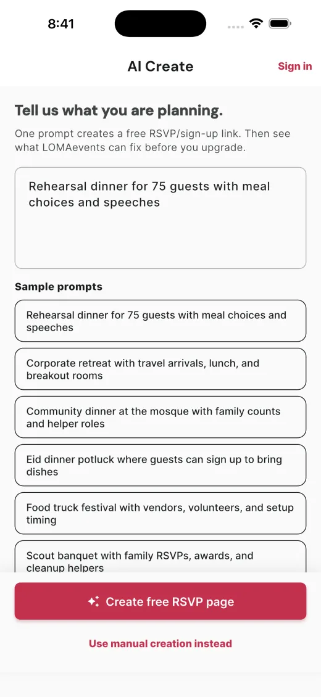

Founder & product engineer
LOMAevents
An end-to-end event planning platform that turns a prompt into a coordinated event: vendors, tasks, budgets, itineraries, invitations, RSVPs, recipes, and guest analytics.
- Shipped a production Flutter app to the Apple App Store
- Built AI-assisted creation with structured guardrails and telemetry
- Connected Firebase, Google Places, Yelp, RevenueCat, email, and deep links
- Created the public acquisition, invite, RSVP, and analytics surfaces

Natural language → structured event
App Store production release